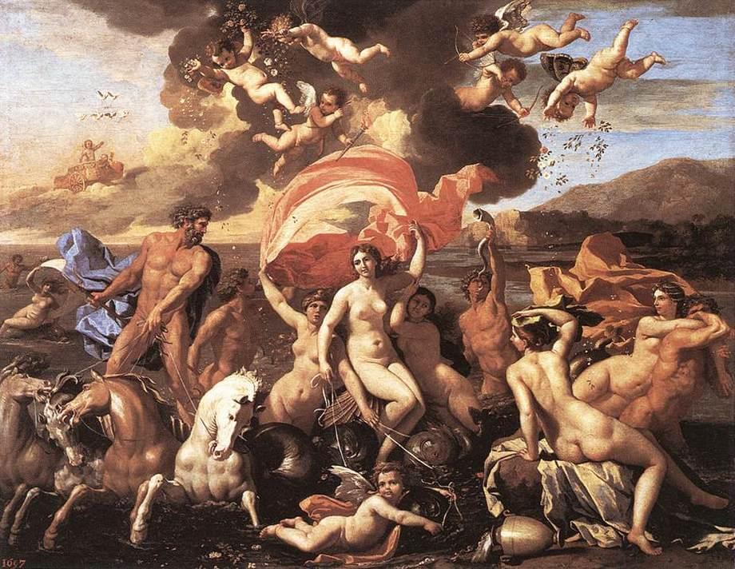
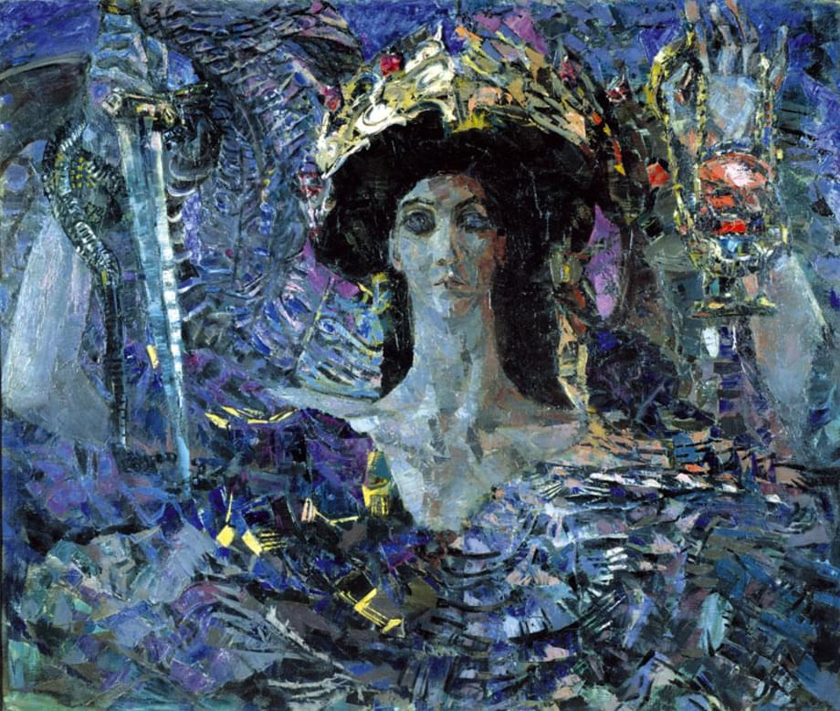
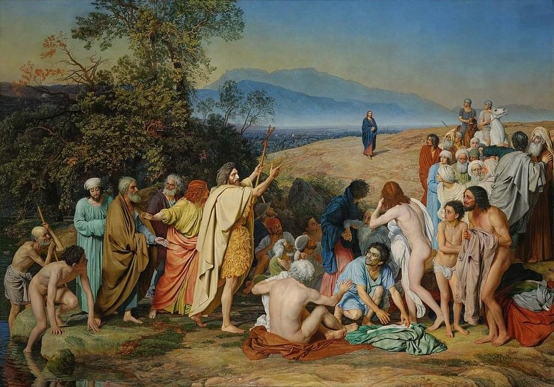
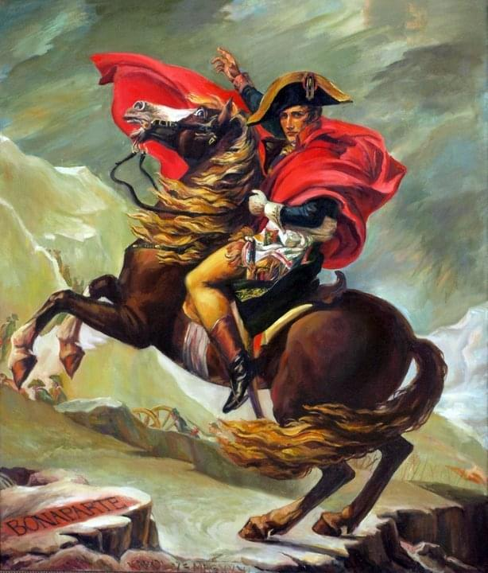
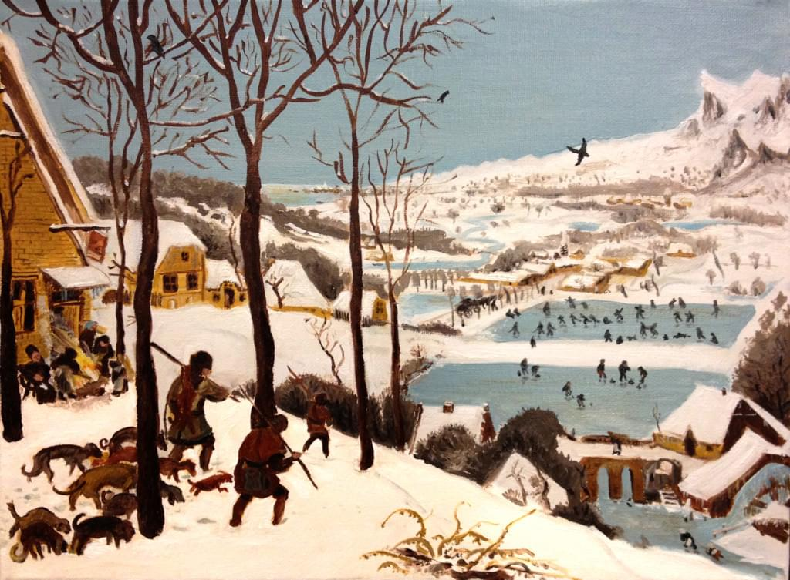

<!DOCTYPE html><html lang="ru"><head><title>Репродукцио</title><link rel="shortcut icon" href="images/favicon.ico" type="image/x-icon"><link rel="stylesheet" href="assets/css/swiper.min.css"><link rel="stylesheet" href="https://use.fontawesome.com/releases/v5.14.0/css/all.css" integrity="sha384-HzLeBuhoNPvSl5KYnjx0BT+WB0QEEqLprO+NBkkk5gbc67FTaL7XIGa2w1L0Xbgc" crossorigin="anonymous"><link rel="stylesheet" href="styles/style.css"></head></html><body><div class="main-wrapper"><header class="header"><h1 class="header__heading">Репро дукцио</h1><p>Оффлайн магазин репродукий шедевров мирового искусства</p><address class="header__contacts">Санкт-Петербург, ул. Адмирала Черокова, 18</address><div class="header__links"><a class="header__link" href="tel:+78129602201">+7 812 960-22-01</a><a class="header__link" href="mailto:shop@reproduct.io">shop@reproduct.io</a></div></header><div class="main"><div class="swiper-main"><div class="swiper-wrapper"><div class="swiper-slide card"><div class="card__info"><div class="card__left"><span class="card__name">Рождение Венеры, 1636</span><span class="card__author">Никола Пуссен</span></div><div class="card__right"><span class="card__prop">97 x 108 см, холст</span><span class="card__price">2400 &#8381;</span></div></div></div><div class="swiper-slide card"><div class="card__info"><div class="card__left"><span class="card__name">Шестикрылый серафим, 1857 </span><span class="card__author">Михаил Врубель</span></div><div class="card__right"><span class="card__prop">131 x 108 см, холст</span><span class="card__price">4100 &#8381;</span></div></div></div><div class="swiper-slide card"><div class="card__info"><div class="card__left"><span class="card__name">Явление Христа народу, 1857 </span><span class="card__author">Александр Иванов</span></div><div class="card__right"><span class="card__prop">120 x 90 см, холст</span><span class="card__price">3700 &#8381;</span></div></div></div></div><i class="fas fa-caret-left main-left"></i><i class="fas fa-caret-right main-right"></i></div><div class="swiper-preview"><div class="swiper-wrapper"><div class="swiper-slide"></div><div class="swiper-slide"></div><div class="swiper-slide"></div></div></div></div></div><div class="popular"><h3 class="popular__heading">Популярное</h3><span class="popular__text">Нестареющая классика и бестселлеры</span><div class="swiper-popular"><div class="swiper-wrapper"><div class="swiper-slide popular__card"></div><div class="swiper-slide popular__card"></div><div class="swiper-slide popular__card"></div></div><i class="fas fa-caret-left popular-left"></i><i class="fas fa-caret-right popular-right"></i></div></div></body><script src="assets/js/swiper.min.js"></script><script src="scripts/bundle.js"></script>